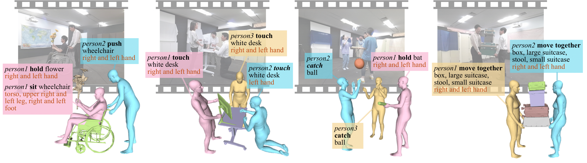
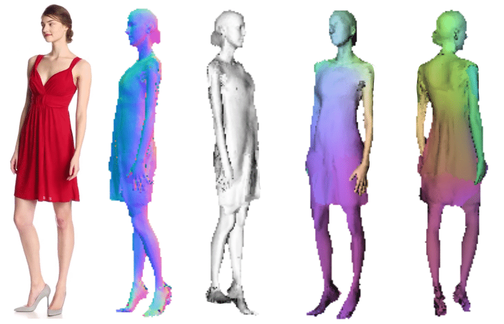
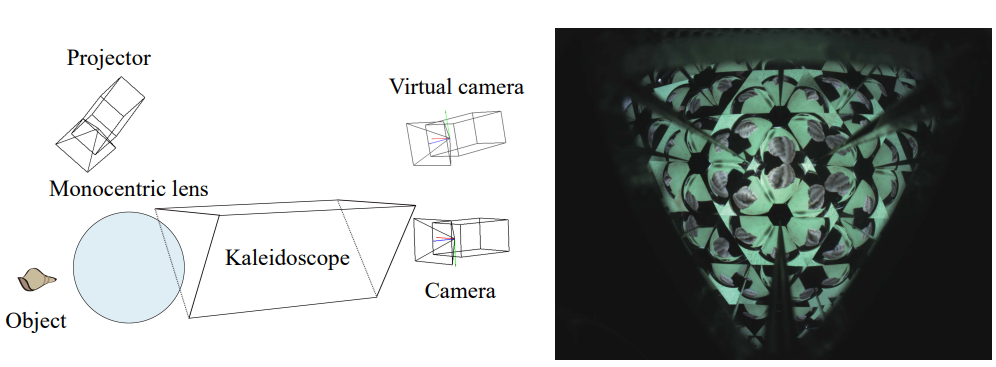
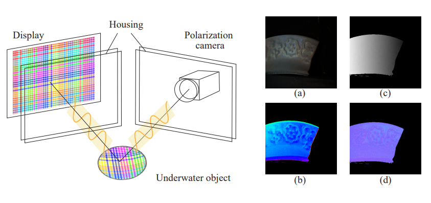

Kobayashi International Scholarship (April 2017 - March 2020)
DOCOMO International Student Scholarship (April 2015 - March 2017)
International ICT Innovative Services Contest 2013 - Third Place (Nov. 2013)
Publications

Winter Conference on Applications of Computer Vision (WACV), 2026

Learning 3D Human UV with Loose Clothing from Monocular Video Meng-Yu Jennifer Kuo, Jingfan Guo, Ryo Kawahara The International Conference on Computer Vision Theory and Applications (VISAPP), 2024

Teleidoscopic Imaging System for Microscale 3D Shape Reconstruction Ryo Kawahara, Meng-Yu Jennifer Kuo, Shohei Nobuhara Computer Vision and Pattern Recognition Conference (CVPR), 2023
[project page]

Polarimetric Underwater Stereo Ryo Kawahara, Meng-Yu Jennifer Kuo, Takahiro Okabe Scandinavian Conference on Image Analysis (SCIA), 2023
[paper]
[poster]
Non-Rigid Shape From Water Meng-Yu Jennifer Kuo, Ryo Kawahara, Shohei Nobuhara, Ko Nishino International Conference on Computational Photography (ICCP), 2021 (Paper talk) Transactions on Pattern Analysis and Machine Intelligence (TPAMI), 2021
[project page]
[supp. material]
[paper]
[talk]
Appearance and Shape from Water Reflection Ryo Kawahara, Meng-Yu Jennifer Kuo, Shohei Nobuhara, Ko Nishino Winter Conference on Applications of Computer Vision (WACV), 2020 (Best Paper Finalist)
[project page]
[supp. material] [paper]
[talk (skip to 33:38)]
Surface Normals and Shape From Water Meng-Yu Jennifer Kuo, Satoshi Murai, Ryo Kawahara, Shohei Nobuhara, Ko Nishino Transactions on Pattern Analysis and Machine Intelligence (TPAMI), 2021
[project page]
Satoshi Murai*, Meng-Yu Jennifer Kuo*, Ryo Kawahara, Shohei Nobuhara, Ko Nishino International Conference on Computer Vision (ICCV), 2019 (Oral, 4.3%) (*Equal contribution)
Invited Talks
Refraction and Absorption for Underwater Shape Recovery
- Max Planck Institute for Intelligent Systems Seminar | Sept., 2021
- Beijing University of Technology Seminar | Apr., 2022
- 第230回コンピュータビジョンとイメージメディア研究発表会 | May, 2022 (奨励賞)
- Keynote talk in International Computational Imaging Conference (CSOE-CITA2022) | Oct. 12, 2022
- Talk in 11th Applied Optics and Photonics China (AOPC2022) | Dec., 2022